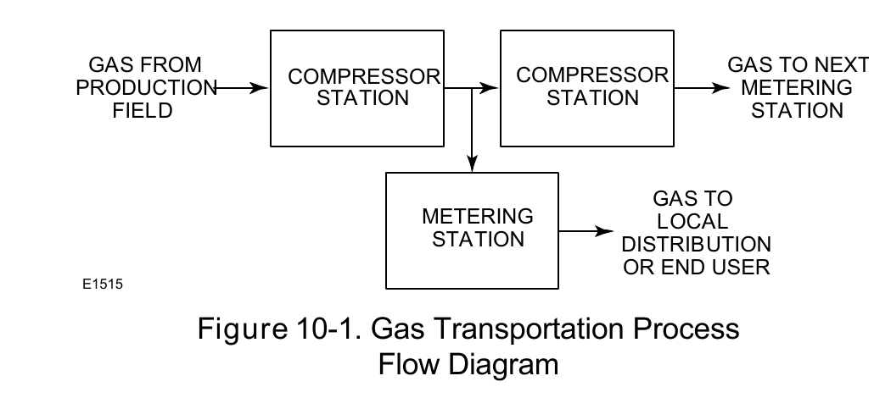

Pipeline-Network Application

Gas and oil transportation are each their own process-flow shape — the chapter treats them as related but distinct networks, not one generic "pipeline" topic.
Fisher Control Valve Sourcebook — Oil & Gas (© 2013 Fisher), Chapter 10 "Oil and Gas Transportation," Figure 10-1 (drawing number E1515, printed p. 10-1, the chapter's opening page) — "Figure 10-1. Gas Transportation Process Flow Diagram." — used directly. Component Index: ogas-cmp-gas-transportation-process-flow.